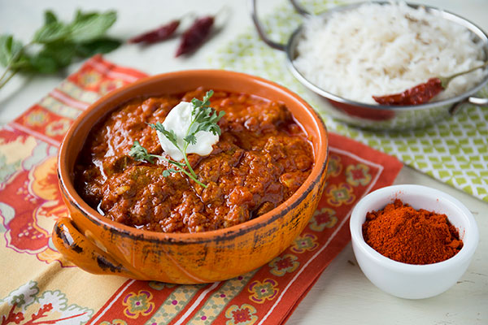

Rogan Josh

Description
Rogan Josh is a traditional Kashmiri curry made with tender pieces of mutton cooked in a
flavorful gravy of yogurt and aromatic spices. Known for its rich red color and deep flavors,
this dish pairs perfectly with steamed rice or naan.
Ingredients
- 500g mutton or lamb pieces
- 2 onions, finely chopped
- 1 cup yogurt
- 2 tbsp ginger-garlic paste
- 2 tsp red chili powder
- 1/2 tsp turmeric powder
- 1 tsp coriander powder
- 1/2 tsp cumin powder
- Whole spices (bay leaf, cloves, cardamom, cinnamon)
- Salt to taste
- Oil or ghee for cooking
- Fresh coriander for garnish
Steps
- Heat oil or ghee in a deep pan and add whole spices.
- Add chopped onions and sauté until golden brown.
- Stir in ginger-garlic paste and cook for a minute.
- Add mutton pieces and sear until lightly browned.
- Mix in chili powder, turmeric, coriander, cumin, and salt.
- Add whisked yogurt slowly, stirring continuously to prevent curdling.
- Add water, cover, and simmer until the meat is tender.
- Cook until the gravy thickens and oil separates.
- Garnish with fresh coriander and serve hot with rice or naan.
Home